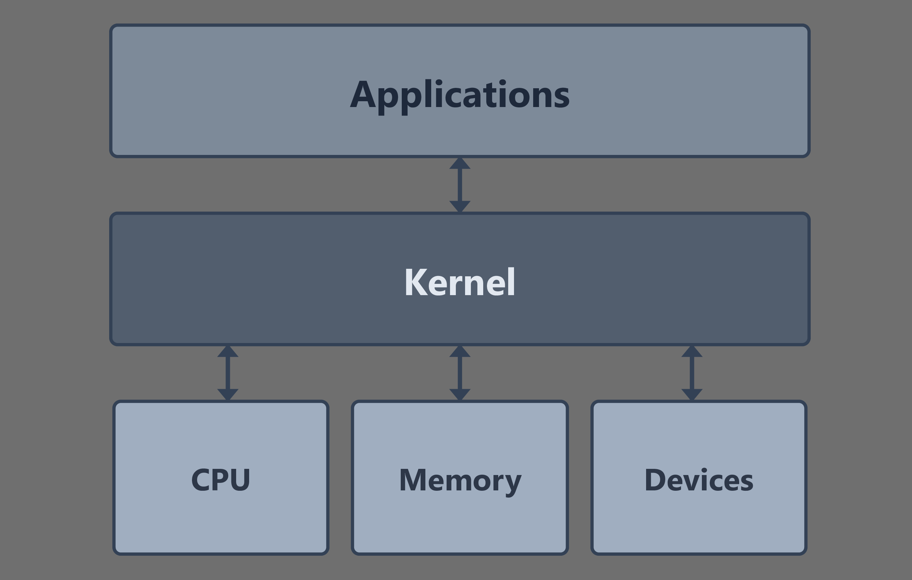

A historia de Linux (Torvalds)
A história do Linux começou em 1991, quando o estudante finlandês Linus Torvalds decidiu criar um núcleo (kernel) de sistema operacional gratuito e independente, inspirado no Unix e no Minix. Diferente de outros projetos da época, Torvalds disponibilizou o código-fonte na internet e convidou outros programadores a colaborar. Essa decisão foi o estopim para um crescimento sem precedentes: ao ser combinado com as ferramentas de software livre do projeto GNU (liderado por Richard Stallman), nasceu o sistema operacional GNU/Linux. Ao longo das décadas, o Linux deixou de ser um projeto de entusiasta para se tornar a espinha dorsal da computação mundial, alimentando desde servidores de internet e supercomputadores até smartphones (Android) e dispositivos espaciais.
As Distribuições Linux
Para que essae ideal de Torvalds ganhasse vida na prática, surgiram as distribuições, que são pacotes completos que combinam o kernel com interfaces gráficas e softwares utilitários para diferentes perfis de usuário. O Slackware e o Debian, lançados no início dos anos 90, pavimentaram o caminho ao organizar o sistema de forma que qualquer pessoa pudesse instalá-lo, dando origem a linhagens famosas: o Debian gerou o Ubuntu, que popularizou o Linux no desktop com foco em facilidade, enquanto o Red Hat focou no mercado corporativo e de servidores. Hoje, essa fragmentação saudável permite que existam sistemas específicos para cada nicho, desde o Linux Mint para ex-usuários de Windows e o Fedora para desenvolvedores, até o Kali Linux, voltado exclusivamente para segurança ofensiva e testes de invasão.
| Distribuição | Base(Ancestral) | Interface Padrão | Público-Alvo |
|---|---|---|---|
| Ubuntu | Debian | GNOME | Iniciantes e Servidores |
| Linux Mint | Debian | Cinnamon | Usuários de Windows |
| Fedora | Red Hat | GNOME | Desenvolvedores |
| Manjaro | Arch Linux | XFCE/KDE/GNOME | Usuários Intermediários |
| Debian | Independente | GNOME | Administradores e Puristas |
| Cada distro tem suas especialidades e características especificas | |||
O Kernel
Todas as distros usam o Kernel Linux, ele é o coração do sistema operacional, atuando como o "grande tradutor" e intermediário entre o hardware do computador e os softwares que você utiliza. Imagine-o como o gerente de um restaurante: ele não cozinha (não é o aplicativo) e não é o fogão (não é o hardware), mas é ele quem recebe os pedidos, decide qual cozinheiro vai usar qual boca do fogão e garante que ninguém tente usar a mesma panela ao mesmo tempo, evitando o caos.

Tecnicamente, o kernel desempenha quatro funções críticas para que o computador não entre em colapso:
- Gerenciamento de Processos: Ele decide qual programa recebe a atenção do processador (CPU) e por quanto tempo, permitindo que você ouça música enquanto digita um texto.
- Gerenciamento de Memória (RAM): O kernel aloca fatias específicas de memória para cada tarefa. Se um programa tenta invadir o espaço de outro, o kernel o impede para evitar travamentos.
- Drivers de Dispositivo: Ele contém o código necessário para "conversar" com a placa de vídeo, o teclado, o Wi-Fi e o disco rígido.
- Chamadas de Sistema (SystemCalls): É a ponte de comunicação; quando um navegador quer salvar um arquivo, ele "pede permissão" ao kernel, que executa a escrita física no disco.
No caso do Linux, ele é um Kernel Monolítico, o que significa que todas essas funções rodam em um único espaço de memória privilegiado para garantir máxima velocidade, embora ele seja modular o suficiente para carregar e descarregar drivers conforme a necessidade, sem que você precise reiniciar a máquina.
As Partições
O conceito de partições no Linux é um pouco diferente do Windows (onde você vê apenas C: ou D:). O Linux utiliza uma estrutura de árvore única, onde cada partição é "montada" em uma pasta específica. As partições funcionam como divisões lógicas no seu disco rígido para organizar dados e proteger o sistema. Aqui estão as principais que você encontrará ao instalar o sistema:
- A Partição Raiz (/): É o "tronco" da árvore. Tudo no Linux nasce aqui. Se você tiver apenas uma partição, ela será a raiz. Ela contém os arquivos do sistema, configurações e programas. Se a partição / encher ou quebrar, o sistema para de funcionar.
- A Partição /home: Esta é a pasta dos usuários. É onde ficam seus documentos, fotos, downloads e configurações de aplicativos.
- A Partição de Troca (Swap): Diferente das outras, a Swap não é usada para guardar arquivos, mas sim como uma "extensão" da sua memória RAM. Quando a RAM fica cheia, o kernel move os dados menos usados para essa partição no disco.
- A Partição /boot ou EFI: É uma partição pequena (geralmente entre 100MB e 500MB) que guarda os arquivos necessários para iniciar o computador, como o GRUB (o menu de inicialização) e o próprio Kernel. Em sistemas modernos (UEFI), ela é obrigatória para que a placa-mãe saiba onde encontrar o sistema operacional.